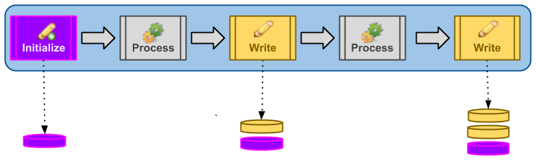

The Audit Writer and Audit Initializer processes work together. This allows the relationship between data at various steps in one or more sequence(s) to be presented under a meaningful and common business identifier.
The Audit Initializer process defines a new business identifier. A message passing through a Audit Initializer process will have its state persisted downstream whenever that same message passes through a subsequent AuditWriter process.

A business identifier is a composite of:
The business identifier (the non-time stamp portion of the business identifier described above) can be configured in be one of the three ways.
This is the default mechanism for defining the business identifier and is used when no explicit definition has been configured on the Audit Initializer process.
Under this mode, the business identifier will be a composite of the Audit Initializer's
sequence name and sequence position. For example, an Audit Initializer placed as the
second step in a sequence named "Test" will auto-configure itself to generate the
business identifier "Test#2".
To specify the a static business identifier, click the configure link next to an Audit Initializer process. Clicking the configure link will surface the configuration screen for the Audit Initializer process.
INVOICE or WEB-DATA) which will form the business identifier.
For example, an Audit Initializer with the value 'PAY-SLIP' will
generate the business identifier 'PAY-SLIP'.
To specify a dynamic business identifier, click the configure link next to an Audit Initializer process. Clicking the configure link will surface the configuration screen for the Audit Initializer process.
SObject field selector screen.
Using the picklist, select the SObject and related SObject
field that define the data source for the dynamic business identifier.
For example, selecting Account and then NaicsCode configures
the Audit Initializer process to perform the following steps at runtime:
NaicsCode from the contents of underlying
data (the dynamic business key)
See the Message Grouping Tutorial.